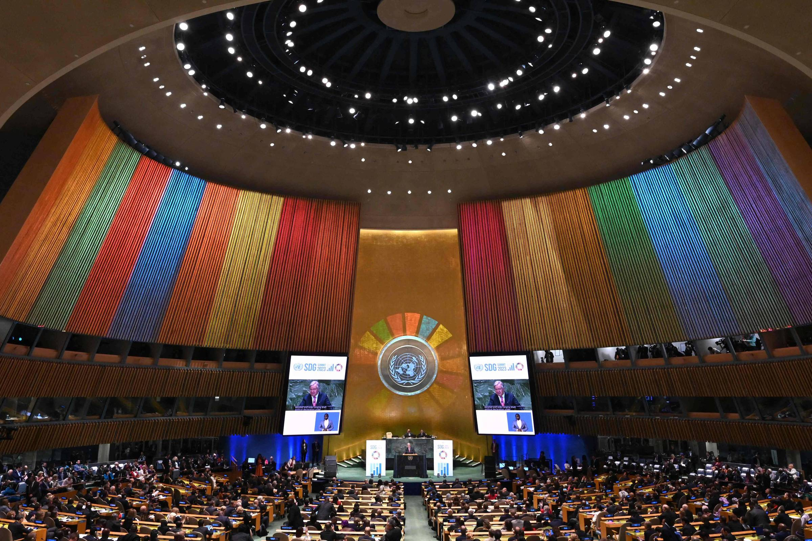
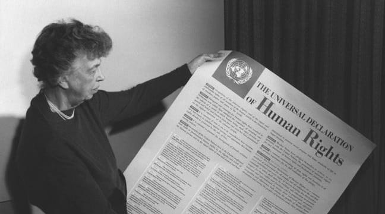
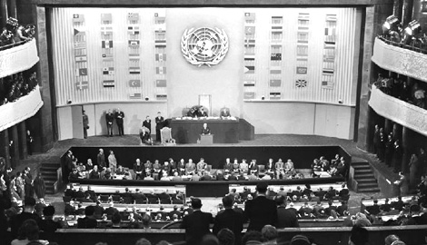

Educação em Direitos Humanos (Decreto n.º 7.037/2009)
A educação em direitos humanos é uma educação que não acontece somente nos limites da sala de aula. Ela é um processo permanente, continuado e global.
Os direitos humanos são um conjunto de benefícios e liberdades fundamentais que todas as pessoas têm, independentemente de sua origem, etnia, crença ou condição social. Eles buscam garantir a dignidade humana e a igualdade de todos os indivíduos, protegendo-os de abusos e discriminações.
Esses direitos abrangem diversos aspectos da vida, como o direito à vida, à liberdade, à segurança, à educação, à saúde, ao trabalho e ao acesso à justiça. Além disso, incluem o direito de viver sem medo de discriminação ou violência, e o direito de expressar opiniões e de participar da vida política e social.
Os direitos humanos estão consagrados em documentos internacionais, como a Declaração Universal dos Direitos Humanos (1948), adotada pela ONU, e são a base de legislações nacionais em muitos países. Embora o conceito de direitos humanos seja global, ele se adapta às particularidades de cada sociedade, com a intenção de promover a justiça social e a igualdade.
Na prática, os direitos humanos envolvem a atuação de governos, organizações internacionais e a sociedade civil para garantir a implementação de políticas públicas que protejam as liberdades e os direitos dos indivíduos, ao mesmo tempo que incentivem uma cultura de respeito e solidariedade.
O que é o PNDH-3?
O Programa Nacional de Direitos Humanos (PNDH-3) é a terceira versão do principal documento que orienta as políticas públicas de direitos humanos no Brasil. Ele estabelece ações estratégicas para garantir a dignidade humana em áreas como educação, segurança, saúde, igualdade racial e de gênero, liberdade de expressão e combate à tortura.
A Diretriz 18 do PNDH-3 trata especificamente da Educação e Cultura em Direitos Humanos, propondo metas para inserção da EDH nos currículos escolares, formação de professores e fortalecimento de uma cultura de paz.
Objetivos da Educação em Direitos Humanos
- Promover valores de respeito, solidariedade, inclusão e cidadania;
- Combater todas as formas de preconceito e discriminação;
- Contribuir para a construção de uma cultura de paz;
- Fortalecer a democracia e os direitos fundamentais;
- Estimular o pensamento crítico e o protagonismo estudantil.
Como aplicar a EDH na escola?
A Educação em Direitos Humanos deve ser transversal, interdisciplinar e vivida no cotidiano escolar. Isso pode acontecer por meio de:
- Projetos pedagógicos voltados para o respeito e a inclusão;
- Campanhas de combate ao bullying, racismo, machismo e LGBTQIA+;
- Assembleias escolares e escuta ativa dos alunos;
- Estudos de temas contemporâneos e debates sobre justiça social;
- Formação continuada de professores com foco em direitos humanos.
A Declaração Universal dos Direitos Humanos (DUDH)
A Declaração Universal dos Direitos Humanos foi adotada pela Assembleia Geral das Nações Unidas em 10 de dezembro de 1948, logo após a Segunda Guerra Mundial. Ela representa um marco histórico na defesa da dignidade humana e estabelece, pela primeira vez, direitos universais que pertencem a todos os seres humanos.
Composta por 30 artigos, a DUDH aborda princípios fundamentais como o direito à vida, à liberdade, à igualdade perante a lei, à educação, ao trabalho e à segurança. Também reforça o respeito à diversidade cultural, religiosa e política, condenando todas as formas de discriminação.
Esse documento é considerado a base de muitos tratados e constituições ao redor do mundo, inclusive do Programa Nacional de Direitos Humanos (PNDH-3) no Brasil. Seu principal objetivo é garantir que todas as pessoas possam viver com dignidade, liberdade e justiça.
Em resumo, a DUDH é um compromisso global com a humanidade, um lembrete permanente de que todos merecem respeito e oportunidades iguais, sem distinção de qualquer tipo.

Assembleia-Geral da ONU

Eleanor Roosevelt, força impulsora na criação em 1948 da sua carta que sempre será o seu legado: A Declaração Universal dos Direitos Humanos.

A Declaração Universal dos Direitos Humanos, adotada e proclamada pela Assembleia Geral da ONU (10 de dezembro de 1948).
ㅤㅤㅤㅤㅤㅤㅤㅤ.
Notícias!
Ouça agora o novo episódio do nosso podcast "Direitos Humanos em Foco"!
______________________________________________________________________________________________________________________________________________________
Entrevista